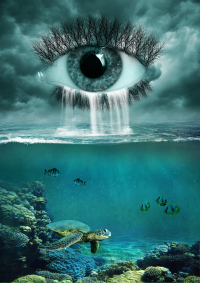
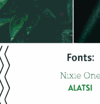
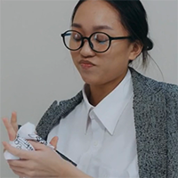

Cinthya Rondon's Resume
About me -
Welcome to my Resume! I'm currently majoring in Digital Media with a Graphic Design degree. I'm excited to apply the skills I have gained through out my years of education and online resources to a company, and bring creativity and innovation to them. I wish to further my career, through interships, and part-time or full-time positions. I describe myself as a passionate and detail-oriented person with an enormous facility to create visually stunning designs or projects.
Skills
- Social Listening
- Strong Communication
- Leadership
- Problem Solving
- Team Management
- Time Management
- Creative Thinking
- Video Creation/Editing
- Photo Editing
- Graphic Designer
- Digital Art and Design
- Bilingual
Software and Hardware
- Adobe Photoshop
- Adobe Illustrator
- Adobe InDesign
- Excel
- Autodesk
- Web Design
Portfolio
Tribal Tulip
Tribal Butterfly
Venezuelan Restaurant Menu
Pet Rescue Organization Website
Restaurant Menu Website
Eye Waterfall

Transparent Orange
Robot
Painting
Palm Tree Design

Moodboard

Postcard

Infographic

Video Editing
